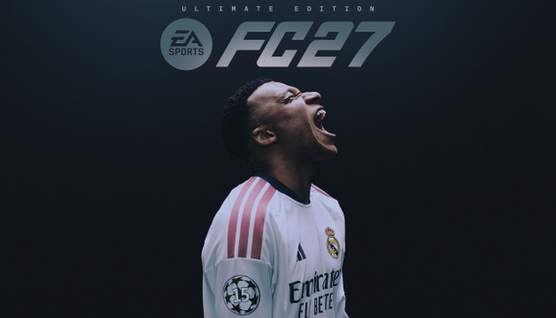

O EA FC27 é um jogo de simulação de futebol publicado pela Electronic Arts, lançado em 25 de setembro de 2026. Este é o quarto título da série EA Sports FC herdeiro da antiga franquia FIFA
Principais caracteristicas do jogo
-
Jogo Rapido: Durante a partida ésta sempre a acontecer qualquer coisa então é necessario ter uma boa visão de jogo para se ser bom.
-
Mecanica da quimica da equipa: Apesar de pudermos utilizar os jogadores que queiramos temos de utilizar alguns que sejam ou do mesmo país ou do mesmo clube ou da mesma liga para que os jogadores que tenham essas mesmas caracteristicas tenham quimica o que os faz jogar melhor que o suposto.
-
Licenças Oficiais: O jogo inclui as maiores competições do planeta, como a Champions League, e ligas reais com os equipamentos e emblemas oficiais de centenas de clubes.

Sabe mais no site oficial: Visitar o site do EA FC27